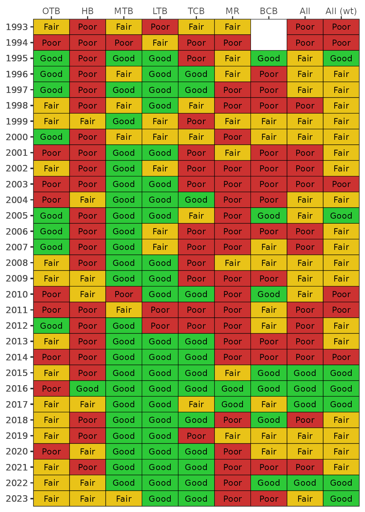

Background
The Tampa Bay Benthic Index (TBBI) [1,2]) is an assessment method that quantifies the ecological health of the benthic community in Tampa Bay. The index provides a complementary approach to evaluating environmental condition that is supported by other assessment methods currently available for the region (e.g., water quality report card, nekton index, etc.). The tbeptools package includes several functions described below to import data required for the index and plot the results to view trends over time. Each of the functions are described in detail below.
The TBBI uses data from the Tampa Bay Benthic Monitoring Program as part of the Hillsborough Country Environmental Protection Commission (EPC). The data are updated annually on a public site maintained by EPC, typically in December after Summer/Fall sampling. This is the same website that hosts water quality data used for the water quality report card. The required data for the TBBI are more extensive than the water quality report card and the data are made available as a zipped folder of csv files, available here. The process for downloading and working with the data are similar as for the other functions in tbeptools.
Data import and included datasets
Data for calculating TBBI scores can be imported into the current R session using the read_importbenthic() function. This function downloads the zipped folder of base tables used for the TBBI from the EPC site if the data have not already been downloaded to the location specified by the input arguments.
To download the data with teptools, first create a character path for the location where you want to download the zipped files. If one does not exist, specify a location and name for the downloaded file. Here, we name the folder benthic.zip and download it on our desktop.
path <- '~/Desktop/benthic.zip'
benthicdata <- read_importbenthos(path)Running the above code will return the following error:
#> Error in read_importbenthic() : File at path does not exist, use download_latest = TRUEWe get an error message from the function indicating that the file is not found. This makes sense because the file does not exist yet, so we need to tell the function to download the latest file. This is done by changing the download_latest argument to TRUE (the default is FALSE).
benthicdata <- read_importbenthic(path, download_latest = T)
#> File ~/Desktop/benthic.zip does not exist, replacing with downloaded file...
#> trying URL 'https://epcbocc.sharepoint.com/:u:/s/Share/EdY7IaU75kFPnVhyoe1yITcBESvFZNAreBwabwyL8EfuqQ?e=1i8Rnf&download=1' length 37122877 bytes (35.4 MB)Now we get an indication that the file on the server is being downloaded. When the download is complete, we’ll have the data downloaded and saved to the benthicdata object in the current R session.
If we try to run the function again after downloading the data, we get the following message. This check is done to make sure that the data are not unnecessarily downloaded if the current file matches the file on the server.
benthicdata <- read_importbenthic(path, download_latest = T)
#> File is current..Every time that tbeptools is used to work with the benthic data, read_importbenthic() should be used to import the data. You will always receive the message File is current... if your local file matches the one on the server. However, data are periodically updated and posted on the server. If download_latest = TRUE and your local file is out of date, you will receive the following message:
#> Replacing local file with current...Calculating TBBI scores
After the data are imported, you can view them from the assigned object. The data are provided as a nested tibble that includes three different datasets: station information, field sample data (salinity), and detailed taxa information.
benthicdata
#> # A tibble: 3 × 2
#> name value
#> <chr> <list>
#> 1 stations <tibble [4,679 × 9]>
#> 2 fieldsamples <tibble [5,133 × 3]>
#> 3 taxacounts <tibble [142,694 × 7]>The individual datasets can be viewed by extracting them from the parent object using the deframe() function from the tibble package.
# see all
deframe(benthicdata)
#> $stations
#> # A tibble: 4,679 × 9
#> StationID AreaAbbr FundingProject ProgramID ProgramName Latitude Longitude
#> <int> <chr> <chr> <int> <chr> <dbl> <dbl>
#> 1 448 MTB Apollo Beach 4 Benthic Monit… 27.8 -82.4
#> 2 449 MTB Apollo Beach 4 Benthic Monit… 27.8 -82.4
#> 3 450 MTB Apollo Beach 4 Benthic Monit… 27.8 -82.4
#> 4 451 MTB Apollo Beach 4 Benthic Monit… 27.8 -82.4
#> 5 452 MTB Apollo Beach 4 Benthic Monit… 27.8 -82.4
#> 6 453 MTB Apollo Beach 4 Benthic Monit… 27.8 -82.4
#> 7 454 MTB Apollo Beach 4 Benthic Monit… 27.8 -82.4
#> 8 455 MTB Apollo Beach 4 Benthic Monit… 27.8 -82.4
#> 9 456 MTB Apollo Beach 4 Benthic Monit… 27.8 -82.4
#> 10 457 MTB Apollo Beach 4 Benthic Monit… 27.8 -82.4
#> # … with 4,669 more rows, and 2 more variables: date <date>, yr <dbl>
#>
#> $fieldsamples
#> # A tibble: 5,133 × 3
#> StationID date Salinity
#> <int> <date> <dbl>
#> 1 448 2002-05-21 30.5
#> 2 449 2002-05-20 30.8
#> 3 450 2002-05-21 30.5
#> 4 451 2002-05-21 30.6
#> 5 452 2002-05-20 30
#> 6 453 2002-05-21 30.6
#> 7 454 2002-05-21 30.5
#> 8 455 2002-05-21 30.3
#> 9 456 2002-05-20 30.0
#> 10 457 2002-05-20 29.9
#> # … with 5,123 more rows
#>
#> $taxacounts
#> # A tibble: 142,694 × 7
#> StationID TaxaCountID TaxaListID FAMILY NAME TaxaCount AdjCount
#> <int> <int> <int> <chr> <chr> <dbl> <dbl>
#> 1 11321 152055 1198 Anomiidae Anomia … 1 25
#> 2 11321 152056 1224 Carditidae Cardite… 1 25
#> 3 584 233277 624 Cirratulidae Chaetoz… 1 25
#> 4 11321 152057 1306 Veneridae Chione … 3 75
#> 5 3132 239443 352 Pilargidae Sigambr… 14 350
#> 6 11321 152058 1088 Pyramidellidae Turboni… 6 150
#> 7 2541 140530 258 NULL NEMERTEA 8 200
#> 8 2542 140531 258 NULL NEMERTEA 2 50
#> 9 2992 140631 262 NULL Palaeon… 4 100
#> 10 3003 140635 285 Tetrastemmatidae Tetrast… 2 50
#> # … with 142,684 more rows
# get only station dat
deframe(benthicdata)[['stations']]
#> # A tibble: 4,679 × 9
#> StationID AreaAbbr FundingProject ProgramID ProgramName Latitude Longitude
#> <int> <chr> <chr> <int> <chr> <dbl> <dbl>
#> 1 448 MTB Apollo Beach 4 Benthic Monit… 27.8 -82.4
#> 2 449 MTB Apollo Beach 4 Benthic Monit… 27.8 -82.4
#> 3 450 MTB Apollo Beach 4 Benthic Monit… 27.8 -82.4
#> 4 451 MTB Apollo Beach 4 Benthic Monit… 27.8 -82.4
#> 5 452 MTB Apollo Beach 4 Benthic Monit… 27.8 -82.4
#> 6 453 MTB Apollo Beach 4 Benthic Monit… 27.8 -82.4
#> 7 454 MTB Apollo Beach 4 Benthic Monit… 27.8 -82.4
#> 8 455 MTB Apollo Beach 4 Benthic Monit… 27.8 -82.4
#> 9 456 MTB Apollo Beach 4 Benthic Monit… 27.8 -82.4
#> 10 457 MTB Apollo Beach 4 Benthic Monit… 27.8 -82.4
#> # … with 4,669 more rows, and 2 more variables: date <date>, yr <dbl>The anlz_tbbiscr() function uses the nested benthicdata to estimate the TBBI scores at each site. The TBBI scores typically range from 0 to 100 and are grouped into categories that describe the general condition of the benthic community. Scores less than 73 are considered “degraded”, scores between 73 and 87 are “intermediate”, and scores greater than 87 are “healthy”. Locations that were sampled but no organisms were found are assigned a score of zero and a category of “empty sample”. The total abundance (TotalAbundance, organisms/m2), species richness (SpeciesRichness) and bottom salinity (Salinity, psu) are also provided. Some metrics for the TBBI are corrected for salinity and bottom measurements taken at the time of sampling are required for accurate calculation of the TBBI.
tbbiscr <- anlz_tbbiscr(benthicdata)
tbbiscr
#> # A tibble: 4,679 × 14
#> StationID AreaAbbr FundingProject ProgramID ProgramName Latitude Longitude
#> <int> <chr> <chr> <int> <chr> <dbl> <dbl>
#> 1 448 MTB Apollo Beach 4 Benthic Monit… 27.8 -82.4
#> 2 449 MTB Apollo Beach 4 Benthic Monit… 27.8 -82.4
#> 3 450 MTB Apollo Beach 4 Benthic Monit… 27.8 -82.4
#> 4 451 MTB Apollo Beach 4 Benthic Monit… 27.8 -82.4
#> 5 452 MTB Apollo Beach 4 Benthic Monit… 27.8 -82.4
#> 6 453 MTB Apollo Beach 4 Benthic Monit… 27.8 -82.4
#> 7 454 MTB Apollo Beach 4 Benthic Monit… 27.8 -82.4
#> 8 455 MTB Apollo Beach 4 Benthic Monit… 27.8 -82.4
#> 9 456 MTB Apollo Beach 4 Benthic Monit… 27.8 -82.4
#> 10 457 MTB Apollo Beach 4 Benthic Monit… 27.8 -82.4
#> # … with 4,669 more rows, and 7 more variables: date <date>, yr <dbl>,
#> # TotalAbundance <dbl>, SpeciesRichness <dbl>, TBBI <dbl>, TBBICat <chr>,
#> # Salinity <dbl>Plotting results
The TBBI scores can be viewed as annual averages for each bay segment using the show_tbbimatrix() function. The show_tbbimatrix() plots the annual bay segment averages as categorical values in a conventional “stoplight” graphic. A baywide estimate is also returned, one based on all samples across all locations (“All”) and another weighted by the relative surface areas of each bay segment (“All (wt)”). The input to show_tbbimatrix() function is the output from the anlz_tbbiscr() function.
show_tbbimatrix(tbbiscr)
The matrix can also be produced as a plotly interactive plot by setting plotly = TRUE inside the function.
show_tbbimatrix(tbbiscr, plotly = T)References
[1] D.J. Karlen, T. Dix, B.K. Goetting, S.E. Markham, K.Campbell, J. Jernigan, J.Christian, K. Martinez, A. Chacour, Twenty-five-year Trends in the Benthic Community and Sediment Quality of Tampa Bay 1993-2017, Tampa Bay Estuary Program, St. Petersburg, Florida, 2020. https://drive.google.com/file/d/1XqwAbvhSRSDMHyGhVtrUTZpVmPqkFsWI/view?usp=drivesdk.
[2] D. Wade, K. Malloy, A. Janicki, R. Nijbroek, S. Grabe, Development of a Benthic Index to Establish Sediment Quality Targets for the Tampa Bay Estuary, Tampa Bay Estuary Program, St. Petersburg, Florida, 2006. https://drive.google.com/file/d/1jWYmbtBWACLXAM3F6xP9VqCD7qEbvOPF/view?usp=drivesdk.